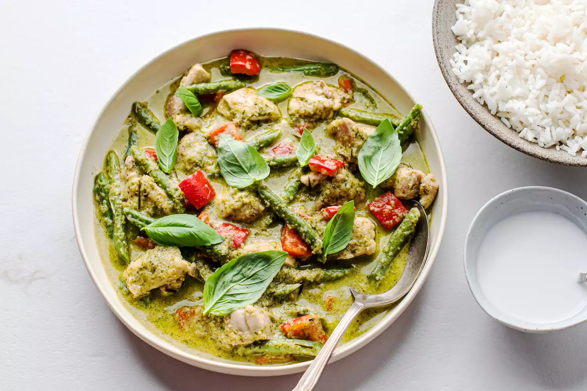

Thai Green Curry

Bright & Fragrant with mild spiciness
Green curry is a classic Thai dish that is known for its balance of heat and sweetness. The base of the curry is made with green curry paste, which is a mixture of ingredients such as green chilies, lemongrass, galangal, kaffir lime leaves, and other spices. This paste is simmered with coconut milk, meat (chicken, beef, or tofu), vegetables, and Thai basil, to create a zesty and flavorful sauce.
Ingredients:
- 1 pound boneless chicken breasts, cubed
- 1 green bell pepper
- 1 handful green beans
Green Curry Sauce:
- 1 can coconut milk
- 2 to 3 tablespoons fresh lemongrass, minced
- 1 shallot, sliced
- 1 thumb-size piece ginger, grated
- 1 loosely packed cup fresh cilantro leaves and stems, coarsely chopped
- 3 to 4 cloves garlic
- 1/2 fresh green chili pepper, sliced
- 2 tablespoons tomato puree
- 2 teaspoons fish sauce
- 2 tablespoons chili powder
- 1/2 teaspoon ground cumin
- 1/2 teaspoon ground coriander
- 1 teaspoon brown sugar
- 1 teaspoon shrimp paste
- 2 tablespoons fresh lime juice
Steps
- Preheat oven to 350 °F.
- Set cubed raw chicken in a large casserole dish.
- Blend all curry sauce ingredients in a food processor.
- Add curry sauce to casserole dish with chicken.
- Cover and bake 45 minutes.
- Remove dish from oven and add the bell pepper and green beans, stirring gently.
- Return curry to oven for 15 to 20 minutes (or until chicken and veggies are well cooked.)
- Transfer curry into a large serving bowl, garnish with fresh basil, and serve with thai jasmine rice.
Home